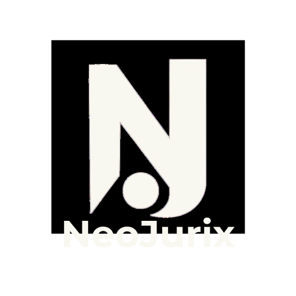

Com o NeoJurix, você facilita o gerenciamento do NPJ da sua Faculdade
 Implementar o sistema * Mais informações*A implementação pode incluir taxas de acordo com o plano escolhido.

*A implementação pode incluir taxas de acordo com o plano escolhido.

Facilita os processos de armazenamento e aprovação das atividades do Núcleo de Práticas Jurídicas da sua instituição, substituindo a caderneta.
Só o NeoJurix traz consigo a facilidade para o NPJ, com uma interface simples e dinâmica, conta com opções para coordenadores, orientadores e estudantes.
Implementar o SistemaDisponibilize aos docentes e discentes da sua instituição essa nova união entre direito e tecnologia nesse sistema inovador.